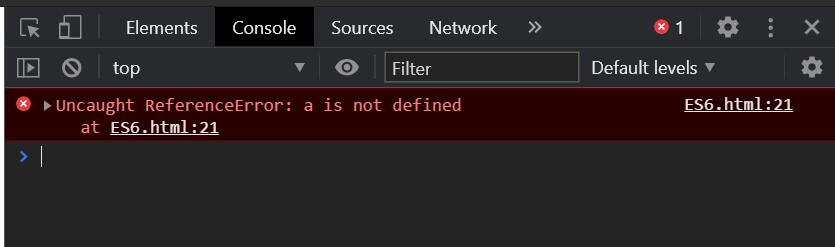

这篇文章上次修改于 471 天前，可能其部分内容已经发生变化，如有疑问可询问作者。
ECMAScript (ES) 就是标准 JavaScript 的脚本语言规范。
它的第 6 个版本，开始被叫做 ECMAScript 6 (ES6) 然后改名为 ECMAScript 2015，为编写更加复杂的程序添加了很重要的新语法。包括了：classes and modules, iterators and for/of loops, generators, arrow functions, binary data, typed arrays, collections (maps, sets and weak maps), promises, number and math enhancements, reflection, and proxies。
ES6 是 ES5 的超集，ES6 现在非常流行，原因就是它引入了新的约定和 OOP 的概念，如：classes。下面我们介绍一些 ES6 中最核心的一些特性。
需要注意的是只有浏览器支持 ES6 的情况下才能够执行 ES6 指令，否则会报错。
var & let
ES6 中有三种方式定义变量：
var a = 10;
const b = "test";
let c = true;使用那种类型来申明变量取决于变量需要使用的 scope 范围。scope 是所有编程语言的基本概念，它定义了变量的可见范围。
var 关键词定义的变量是全局有效的，或者在整个 function 内有效，而与具体在那个代码块内定义它无关。
let 可以定义一个变量在某个特定 scope 内有效，如一个代码块或一个表达式内。
例如：
if (true) {
let age = 5;
}
alert(age);以上代码会报错 ES6.html:21 Uncaught ReferenceError: age is not defined，可以打开浏览器调试窗口查看：

这种情况下，name 变量只能在 if 表达式内被使用，因为它使用 let 申明。
测试 var 和 let 的区别，我们做下面的示例：
<script>
function varTest() {
var x = 1;
if (true) {
var x = 2;
console.log(x); // 2
}
console.log(x); // 2
}
function letTest() {
let x = 3;
if (true) {
let x = 4;
console.log(x); // 4
}
console.log(x); // 3
}
varTest();
letTest();
</script>输出结果为：
2
2
4
3varTest() 中定义的两个 x 实际上是同一个变量。letTest() 中 if 表达式中的 x 和外围的 x 不是一个变量。
let 最常使用的地方就是 for 循环中：
for (let index = 0; index < 3; index++) {
}index 只在 for 循环内可以被使用。
const 变量和 let 变量一样都在 scope 内有效。不同点是 const 变量的值是不可变的，不能够被重新分配数据。
以下指令会报错：
const a = 1;
a = 2;Template Literals
Template literals 文字模板是将变量输出到字符串的一种方式，ES6 之前需要打断字符串：
var name = "marco";
var msg = "hello" + name + "!";
console.log(msg);ES6 引入了一种新的方式来处理：
var name = "marco";
var msg = `hello ${name}!`;
console.log(msg);template literals 文字模板使用 ` 符号来代替引号 " 或 '。
${expression} 是一个占位符，可以包含任何表达式，将评估的结果返回后嵌入 template literals 文字模板中。
例如：
var a = 1;
var b = 2;
var msg = `sum is ${a + b}`;
console.log(msg);Loops and Functions in ES6
在 JavaScript 中常用 for 循环来 iterate list 中的元素：
let array = [1, 2, 3];
for (let index = 0; index < array.length; index++) {
const element = array[index];
}for...in 循环可以用来 iterating 一个含有一定数量的 properties 的 object：
let obj = {
a: 1,
b: 2,
c: 3
};
for (let key in obj) {
console.log(obj[key]);
}log 输出为：
1
2
3注意 for...in loop 不能 iterate 一个 array 数组。虽然数组也是一个 object，但他的 index 索引是基于 number 数字的。基于 JavaScript engine，for...in 循环 iterate 某个 list 的元素的顺序是随机的，而且 iterating 索引是一个 string 字符串的，而不是 number 数字，所以当你测试对这个索引进行某些 math 数学加法运算，会发现执行的是对字符串的串联而不是数字运算。
ES6 中引入了一个 for...of loop 能够创建一个对 iterable object 进行 iterating 的循环，数组就是一种 iterable object，而含有 name: value 结构属性的 object 不属于。后面我们会介绍实际上是通过 Symbol.iterator 来索引数组类型的 object 的。
例如：
let array = [1, 2, 3];
for (const iterator of array) {
console.log(iterator);
}在每个循环中，iterator 变量都会赋值为 object 内的坐标元素。
for...of loop 适用于其他 iterable objects 例如 string 字符串：
for (const iterator of "object") {
console.log(iterator);
}输出结果为：
o
b
j
e
c
tfor...of 同样适用于 ES6 新引入的一些集合：Map, Set, WeakMap, and WeakSet，后面我们会做介绍。
Functions in ECMAScript 6
ES6 之前定一个 function 的方法如下：
function add(a, b) {
let sum = a + b;
console.log(sum);
}ES6 介绍了一种新的语法，效果和上面的示例完全一样：
const add = (a, b) => {
let sum = a + b;
console.log(sum);
}这种写法叫做 arrow function，对于只有一个参数的简单 function 非常好用，可以省略关键词 function 和 return 甚至是大括号{}和小括号()：
const greet = x => "welcome" + x;以上代码定义了一个 greet function，有一个参数和一个 string 返回值。
如果 function 没有参数，需要加一个小括号()：
const x = () => alert("hi");这种语法对于 inline function 很有用。
假如有一个数组，需要对其每一个元素都执行某个 function，使用 array 的 forEach method 来为每个元素调用 function，传统写法如下：
var arr = [1, 2 ,3 ];
arr.forEach(function(el) {
console.log(el * 2);
});在 ES6 中，以上功能可以重写为：
arr.forEach(el => {
console.log(el * 2);
});代码是不是简化很多呢？
Default Parameters in ES6
之前的 function 中定义参数的默认值可以这样：
function test(a, b = 2, c = 3) {
console.log(a + b + c);
}使用 arrow function 可以这样定义：
const test = (a, b = 2, c = 3) => {
console.log(a + b + c);
}ES6 objects
JavaScript 中 object 内可以定义多个 variable 变量，叫做 properties。properties 定义了 function 的叫做 method，例如：
var person = {
name: "marco", age: 20,
like: "basketball", height: 62,
test: function() {
alert("method");
}
};test 就是一个 method，ES6 引入了一种简化的语法和 properties 名称来使定义更加方便和易懂。
新的语法定义 method 不需要冒号: 和 functon 关键词：
let person = {
test() {
alert("hi");
}
};
person.test();当使用已知变量定义 properties 且定义名称和变量名称一样时，可以简写语法如下：
let height = 160;
let weight = 60;
let man = {
height,
weight
};以上定义中 man object 就定义了两个 properties：height，weight，且赋值为外部调用变量的值。
当在 object 中定义了相同名称的 properties，最后一个定义的 property 将会覆盖前面的：
let x = {a: 2, a: 3, a: 4};
console.log(x.a);输出结果为：4
在 ES5 中如果使用了 restrict 限制模式，定义重复名称的 properties 将会报语法错误，ES6 中取消了这个限制。
Computed Property Names 预定义属性名
ES6 中，可以使用 computed property name 预定义属性名。通过方括号[] 我们可以在 properties name 中使用一个表达式，可以进行包括串联字符串或数学运算等指令。当需要创建一个基于实际用户数据(id, email等)的特定 object 时非常有用。
示例 1：
let name = "marco";
let id = "123";
let tel = "1300000";
let user = {
[name]: "tom",
[`user_${id}`]: `${tel}`
};
console.log(user.user_123);
//output:
//1300000示例 2：
let i = 0;
let x = {
['foo' + ++i]: i,
['foo' + ++i]: i
}
console.log(x.foo1);
console.log(x.foo2);
//output:
//1
//2示例 3：
var par = 'size';
var config = {
[par]: 1,
['mobile' + par.charAt(0).toUpperCase() + par.slice(1)]: 2
}
console.log(config.mobileSize);
//output:
//2当需要创建基于变量的自定义 object 时，这种方法很有效。
也可以在调用 object 属性是使用预定义属性的特性，下面我们定义一个 object 然后通过方括号通过另一个变量间接调用其属性：
const obj1 = {
name: 'marco',
age: 32
}
const choice = 'age';
console.log(obj1[choice]);ES6 object 新增了一个新的 method：assign() 可以用来将多个 source 源结合起来创建一个新 object。assign() 也可以用来创建一个已知 object 的副本。
请看下面示例：
let user1 = {
name: 'marco',
age: 20,
sex: 'male'
}
let user2 = {
name: 'jim',
age: 18,
tel: '12345'
}
let newUser = Object.assign({}, user1, user2);
console.log(newUser.name);
console.log(newUser.tel);
//output:
//jim
//12345Object.assign() 的第一个参数表示需要添加新 properties 的目标 object，第一个参数后的所有参数都会被作为 source 源，源参数的数量没有限制，可以任意多个。
但是源参数的顺序很重要，因为前面的源 properties 将会被后面的有着同样属性 name 的源 properties 覆盖。例如上面示例中，user1 的 name 和 age properties 会被 user2 的同样名称的 properties 覆盖。
以上示例，我们使用{} 作为目标 object，使用两个 object 作为源。
下面我们介绍如何使用 assign() 创建一个 object 复制，新 object 不和原 object 产生关联。
在下面的示例中，我们使用简单的 assignment = 来创建新 object，但是这种方式会在 object 和原 object 间产生 reference 关联。对新 object 的修改会影响到原 object：
let person = {
name: 'marco',
age: 20
};
let newPerson = person;
newPerson.name = "tom";
console.log(newPerson.name);
console.log(person.name);
//output:
//tom
//tom可以看到 修改 newPerson 的 name 属性也会同时影响到 person 的 name 属性。
为了避免这种情况，可以使用 Object.assign() 来新建 object：
let person = {
name: 'marco',
age: 20
};
let newPerson = Object.assign({}, person);
newPerson.name = 'tom';
console.log(newPerson.name);
console.log(person.name);
//output:
//tom
//marco我们也可以在 assign() 中直接给 properties 赋值：
let person = {
name: 'marco',
age: 20
};
let newPerson = Object.assign({}, person, {name: 'john'});
console.log(newPerson.name);
console.log(person.name);
//output:
//john
//marco以上就是 ES6 中 object 的新语法介绍。
Array Destructuring in ES6 数组拆解
destructuring assignment 拆解赋值语法能够实现将一个 array 的 values 拆分，或者将一个 object 的 properties 拆解为独立的个体。
Destructuring array
ES6中引入的快捷语法来拆解 array 数组，下面的示例介绍如何将数组元素拆解为独立个体：
let arr = [1, 2, 3];
let [a, b, c] = arr;
console.log(a);
console.log(b);
console.log(c);也可以拆分一个 function 返回的数组：
let a = () => {
return [1, 2, 3]
};
let [a, , c] = a();注意上面示例中，第二个参数留空了，表示 a 赋值数组第一个元素，c 赋值数组第三个元素。
以上 function 使用了 ES6 的简写语法，参考上一节的介绍。
destructuring 拆分语法同样能够简化赋值和交换数据：
let a, b, c = 3, d = 4;
[a, b = 2] = [1]; //a=1, b=2
[c, d] = [d, c]; //c=d, d=c
console.log(a);
console.log(b);
console.log(c);
console.log(d);
//output:
//1
//2
//4
//3以上的语法再一些使用场景中能够很大简化代码量，使程序更加简洁。
Destructuring object
类似于拆解数组，也可以拆解 object 的 properties 为单独个体：
let obj = {h: 1, s: 2};
let {h, s} = obj;
console.log(h);
console.log(s);注意定义的新变量名需要和 object property 名称一致，否则新变量的值为：undefined。
也可以不声明新变量而直接赋值，但有语法要求。需要加小括号()：
let obj = {h: 1, s: 2};
let h, s;
({h, s} = obj);拆解时可以给 object 的 properties 定义新的名称，使用: name: newname 形式：
let obj = {h: 1, s: 2};
let {h: a, s: b} = obj;
console.log(a);
console.log(b);这时候如果执行：console.log(h); 会报错。
最后，我们可以给新变量设置初值，如果 object 中没有定义这个属性，新变量就会使用初值：
let user = {name: "marco", id: 123};
let {name = "tom", age = 20} = user;
console.log(name);
console.log(age);
//output:
//marco
//20以上示例中，user object 含有 name 属性，则赋值为对应数据，没有 age 属性则会使用默认值作为新变量的数据。
ES6 Rest Parameters
在 ES6 之前，如果调用 function 时传入的参数数量是变化的，我们可以使用 arguments array object 来访问这些传入数据。下面示例中，我们创建一个 function 来检查传入参数值是否都在一个给定数组内：
function containsAll(arr) {
for (let index = 1; index < arguments.length; index++) {
let num = arguments[index];
if (arr.indexOf(num) == -1) {
return false;
}
}
return true;
}
let x = [2, 4, 6, 8];
console.log(containsAll(x, 2, 4));
console.log(containsAll(x, 3, 4, 6));
//output:
//true
//false可以看到 function 预定义的参数只有一个，我们在调用时传入了大于 1 个的参数，这时候在 function 内就需要使用 arguments 数组来索引传入数据。arguments[0] 代表第一个参数，也就是预定义的 arr 参数，其他数据在 arguments 数组中往后依次排列。
我们使用了 array 的 indexOf method 来获取某个数据在数组中的 position 位置，如果数组中不存在这个数据，则返回 -1，这里我们使用了 === identity operator 来确保数据类型和数值都要匹配上。
我们可以给 function 传入任意数量的数据，然后使用 arguments 数组来访问它们。
ES6 中通过使用 rest parameter 剩余参数创建了一种更加简洁的语法，来访问变化的传入参数数据：
function containsAll(arr, ...nums) {
for (const iterator of nums) {
if (arr.indexOf(iterator) == -1) {
return false;
}
}
return true;
}...nums 叫做 rest parameter 剩余参数，它包含了所有 extra 附加的传入参数，... 叫做 Spread operator 延伸符。
只有后面的传入参数才可能被标记为 rest parameter，如果调用时没有 extra 附加的传入参数，则 rest parameter 的值将会是一个空数组[]，而不是 undefined。
Spread Operator 延伸符
Spread Operator 延伸符类似于 Rest Parameter，但它在应用于 object，array 或 function 时有其他功能。
function
在 ES6之前，我们可以通过 apply() method 来实现调用 function 时使用数组作为传入参数：
function test(a, b, c) {
console.log(a + b + c);
}
var arr = [1, 2, 3];
test.apply(null, arr);
//output:
//6通过 function 的 apply() method，可以将 method 应用于其他外部 object 上，同时用一个数组传入 function 参数。具体参考：JavaScript 入门教程之四 -- Functions
ES6 使用 Spread Operator 实现更加简单的语法来实现上面的功能：
const test = (a, b, c, d) => {
console.log(a + b + c + d);
}
var arr = [1, 2, 3];
test(...arr, 4);
//output:
//10以上示例中，我们使用了 ... 延伸符来将数组数据作为传入参数。因为数组只有 3 个数据，所以我们后面又附加了一个传入参数。
也可以应用于 constructor function：
let date = [2020, 11, 1];
let x = new Date(...date);
console.log(x.getFullYear());array
ES6 之前，我们使用下面方法给数组中插入元素：
var arr = ["one", "two", "five"];
arr.splice(2, 0, "three", "four");
console.log(arr[3]);splice method 用来给数组中某个位置插入数据，第一个参数是行号，第二个参数是列号，后面的参数是要插入的元素，可以是任意多个。
ES6 中，可以这样写：
let newArr = ["three", "four"];
let arr = ["one", "two", ...newArr, "five"];因为数组的标准创建方法是：
let arr = new Array(a, b, c);
所以为了将传递参数放在数组中，我们就可以使用 ...延伸符来处理：
let arr = new Array(...newArr);
//or
let arr = [...newArr];object literals
在 object 中使用 Spread Operator 可以复制所有的 properties 到新的 object：
const obj1 = {
a: 1,
b: 2
}
const obj2 = {
c: 3,
d: 4
}
const obj3 = {...obj1, ...obj2};
console.log(obj3.a);
console.log(obj3.d);
//output:
//1
//4使用前面提到的 Object.assign() method 也可以实现复制 object。
注意，如果通过下面的方法想要合并两个 object 会得到不一样的结果：
const merge = (...objs) => ({...objs});
let newObj = merge(obj1, obj2);
console.log(newOb);
//output:
//{0: {a: 1, b: 2}
1: {c: 3, d: 4}}它会将每个 object 作为一个 property 的值。
Classes in ES6
这一节我们将介绍如何创建 class 来创建同样结构的不同 object。
使用关键词 class 来创建 class，包含一个 constructor method 来初始化参数。这个结构和 c++ 的 class 定义方法很类似。
下面是一个示例：
class Test {
constructor(a, b) {
this.a = a;
this.b = b;
}
}class 名称的首字母习惯用大写字符。声明好的 class 可以使用 new 关键词来创建 object：
const x = new Test(1, 2);
const y = new Test(3, 4);
console.log(x.a);
//output:
//1在使用 class 前必须先定义它，如果把定义放在调用后面，则会报错：ReferenceError。
也可以在表达式中直接定义 class，可以有 class 名称，也可以不写：
const x = class Test {
constructor(a, b) {
this.a = a;
this.b = b;
}
};
const y = class {
constructor(a, b) {
this.a = a;
this.b = b;
}
};constructor 是 class 来初始化 object 时的特殊 method，每个 class 只能够一个 constructor。
ES6 引入了一种简写语法，可以在定义 method 时省略 function 关键词。class 中定义的 method 叫做 prototype method，object 中可以调用对应 class 中的 method。
请看下面示例：
class Test {
constructor(a, b) {
this.a = a;
this.b = b;
}
get sum() {
return this.calcSum();
}
calcSum() {
return this.a + this.b;
}
}
const x = new Test(1, 2);
console.log(x.sum);
console.log(x.calcSum());
//output:
//3
//3以上代码中，sum 叫做 getter 获取器，calcSum 是 method。getter function 使用关键词 get 定义，必须有 return 返回值，调用时不需要写小括号()，类似于 property 的调用。
static method 是另一种特殊 method，这种 method 不能在实例化的 object 中调用，只能被 class 本身调用，使用关键词 static 定义：
class Test {
constructor(a, b) {
this.a = a;
this.b = b;
}
static distance(x, y) {
const dx = x.a - y.a;
const dy = x.b - y.b;
return Math.hypot(dx, dy);
}
}
const x = new Test(1, 2);
const y = new Test(3, 4);
let z = Test.distance(y, x);
console.log(z);以上示例中可以看到，distance method 直接使用 Test class 调用，而不是 object。Static methods 常用于在一个 application 中创建功能性 function。
extends 关键词用来创建一个 class 的 child class。child class 继承了 parent class 的所有 properties 和 methods。
示例：
class Animal {
constructor(name) {
this.name = name;
}
speak() {
console.log(`${this.name} makes a noise.`);
}
}
class Dog extends Animal {
speak() {
console.log(`${this.name} barks.`)
}
}
let dog = new Dog('tom');
dog.speak();
//output:
//tom barks.上面示例中，Dog class 是 Animal class 的 child class，继承了 Animal 的所有 properties 和 method。child class 也可以 overwrite 重写 parent class 的 method。
当 child class 也有 constructor 时，需要首先调用 super() 来初始化 parent class，然后才能使用 this 关键词。初始化参数要考虑 parent class 需要的参数：
class Dog extends Animal {
constructor(name, age) {
super(name);
this.age = age;
}
speak() {
console.log(`${this.name} barks.`)
}
}同样的，使用 super 关键词可以调用 parent 的 method，这在 child class 重写了某个 method 时可以使用这个方法调用 parent 原始的 method，下面是修改后的完整示例：
class Animal {
constructor(name) {
this.name = name;
}
speak() {
console.log(`${this.name} makes a noise.`);
}
}
class Dog extends Animal {
constructor(name, age) {
super(name);
this.age = age;
}
speak() {
super.speak();
console.log(`${this.name} barks.`)
}
}
let dog = new Dog('tom', 10);
dog.speak();
console.log(dog.age);
//output:
//tom makes a noise.
//tom barks.
//10super.speak() 调用了 parent class 的 method。
ES6 Map
Map object 可以存储 key/value pairs 配对数据组。一个 key 或 value 可以是任何数据类型，例如 string，number，object，源数据等任何数据。
使用 new Map([iterable]) 来创建 Map object，iterable 可以是任何可以 iterable 的数据，但每个元素都需要是由 key/value 两个构成的 pairs 数组。可以看到 Map 和 object 和相似，Map 的单个元素和 object 的 property 结构类似。但使用 Map 由如下优点：
- key 可以是任何数据类型，包括：function，object或其他
- 可以获取 Map 的 size，也就是包含的元素个数
- 可以直接在 Map 中 iterate
- 添加和删除 key/value 组合时性能更强
let map = new Map([
['a', 1],
['b', 2]
]);
console.log(map.size);
//output:
//2以上示例定义了一个 Map object。包含两个 pairs 配对，每个配对都是一个含有 2 个元素的数组。Map 的 size property 返回包含的配对个数。
Map object 可用的 method：
set(key, value)添加一个 pairs 配对，如果指定的 key 已经存在，则会替换对应的 value。get(key)获取包含指定 key 的配对的 value，如果不存在指定 key 的 pairs 配对，则返回 undefinedhas(key)查询是否存在包含指定 key 的配对，如果存在返回 truedelete(key)删除包含指定 key 的配对，然后返回 true，如果不存在这个配对，则返回 falseclear()删除所有 Map 中的 pairs 配对keys()返回一个 iterator 包含所有 pairs 配对中的 keyvalues()返回一个 iterator 包含所有 pairs 配对中的 valueentries()返回一个 iterator 包含所有 pairs 配对数组：[key, value]
示例：
let map = new Map();
map.set('a', 1).set('b', 2);
console.log(map.get('a'));
console.log(map.has('b'));
for (const iterator of map.entries()) {
console.log(iterator[0] + " : " + iterator[1]);
}
//output:
//1
//true
//a : 1
//b : 2以上示例演示了部分 Map method。
ES6 Set
Set object 可以用来存储 unique 唯一的 values，不允许有重复数据。
使用 new Set([iterable]) 语法来创建一个 Set object，iterable 是一个数组或任何其他可以 iterate 的数据：
let set = new Set([1, 3, 5, 1, 7, 5]);
console.log(set.size);
//output:
//4size property 返回这个 Set object 包含数据个数。可以看到返回值为 4，这是因为重复的数据会被忽略。
可供使用的 method 如下：
add(value)添加一个新数据到 Setdelete(value)删除某个数据has(value)检查是否存在某个数据，如果存在则返回 trueclear()清空 Setvalues()返回一个 iterator 包含所有 Set object 中的数据。
示例：
let set = new Set();
set.add(1).add(3).add(9).add(1);
console.log(set.has(3));
for (const iterator of set) {
console.log(iterator);
}
//output:
//true
//1
//3
//9以上示例介绍了 Set 部分 method 的用法。
Set 支持不同的数据类型，例如 1 和 '1' 是不同的数据。甚至是 NaN 和 undefined 也可以存储在 Set 中。
ES6 Promises
Promise 相比较于 setTimeout() method 是一种更好的异步编程方法。
通常想要延时执行某个 function，可以通过 setTimeout() 实现：
setTimeout(() => {
console.log('second');
setTimeout(() => {
console.log('third');
}, 3000);
}, 3000);
console.log('first');
//OUTPUT:
//frist
//second
//third以上示例实现：先输出 first，延时 3 秒输出 second，然后再过 3 秒后输出 third。每个 function 只执行一次，如果要循环执行，可以使用 setInterval() 实现。
setTimeout method 可以实现异步执行动作，但是如果需要处理的任务很多，使用这种方法就会导致嵌套很复杂。
ES6 引入的 promise 可以解决这个问题，使用下面语法结构创建 promise：
new Promise(function(resolve, reject) {
if (success)
resolve(result);
else
reject(Error('failure'));
});Promise 包含有两个 function 参数，这两个参数定义了 promise 成功和失败两种情况下的回传数据。在 promise 中定义这两者的逻辑。示例中 resolve 在 success 为 true 时被调用它的回传数据是 result 变量的数据，reject 在 else 情况被调用它的回传数据是字符串failure。
当 promise 定义后，它会在其他进程保持 pending 挂起状态等待 callback 调用。
那么 Promise 中需要的这两个回传数据在什么地方被使用呢？如果一个 object 的返回类型为 Promise ，则可以调用 then method，其中定义的两个 callback function 分别对应于 resolve 和 rejecct，传入数据分别来自他们在 promise 中的传入数据。
下面的示例中，定义一个返回值为 Promise 类型的 function，然后调用这个 function：
const asyncTest = (work) => {
return new Promise((resolve, reject) => {
if (work === "")
reject(Error('nothing'));
setTimeout(() => {
resolve(work);
}, 3000);
});
};
asyncTest('second')
.then((result) => {
console.log(result);
return asyncTest('third');
},
(error) => console.log(error))
.then((result) => console.log(result),
(error) => console.log(error));
console.log('frist');
//OUTPUT:
//frist
//second
//third以上示例和第一个示例效果一样，首先输出 frist，3 秒后输出 second，在经过 3 秒输出 third。同样的都是三个输出都是异步进行的。
以上语法相比之前的代码使逻辑关系更加清晰，Promise object 定义了调用两个 method 的原则，通过调用 then method 定义 2 个 method 的指令，只有 Promise 类型的 object 才有 then method。所以如果要继续扩充异步动作，只需要在某个 method 中返回 promise 类型的数据，就可以继续通过 then method 定义其他动作。
以上示例中，我们通过第一个 then 定义 1 个延时触发指令，然后返回一个新的 Promise 类型 object，这样可以继续调用第二个 then 来实现其他异步动作。以此类推可以继续扩展下去。
也可以使用 then 和 catch method 分别定义 resolve 和 reject 情况的 callback function，如：
asyncTest('second')
.then(result => {
console.log(result);
return asyncTest('third');
})
.then(result => console.log(result))
.catch(error => console.log(error))
console.log('frist');当 reject 情况时，会查找最近的一个 catch function。
Iterators & Generators
Symbol.iterator 是 object 内置默认的 iterator，for...of loop 就是基于这种类型的 iterator 来处理数组 object 的。
下面的示例介绍 Symbol.iterator 和 generator functions 如何使用：
let myIterableObj = {
[Symbol.iterator]: function* () {
yield 1;
yield 2;
yield 3;
}
};
console.log([...myIterableObj])以上示例中，我们创建了一个 object 通过 Symbol.iterator 和 generator function 来定义一些 properties。
使用关键词 function 后加一个星号* 叫做 generator function (or gen function)。
通过下面示例介绍如何使用 generator function：
function* id() {
let index = 0;
while (index < 5) {
yield index++;
}
}
let x = id();
console.log(x.next().value);
console.log(x.next().value);
console.log(x.next().value);
//output:
//0
//1
//2可以看到当 generator function 返回数据后，如果条件依然满足，它就不会直接跳出 function 而是会继续执行指令直到内部指令完全执行完毕，这一过程中可以使用关键词 yield 多次返回数据。这在实现异步程序中很有用，尤其是结合 Promise 来使用。
generator function 可以进行多级嵌套使用，实现更加复杂的循环逻辑。
下面的示例依然结合 Symbol.iterator 和 generator functions 使用：
const arr = ['a', '1', '3', '5b', '9', 'f'];
const myObj = {
[Symbol.iterator]: function*() {
for (const iterator of arr) {
yield `${iterator}`;
}
}
};
const all = [...myObj]
.map(i => parseInt(i, 10))
.map(Math.sqrt)
.filter(i => i < 5)
.reduce((i, d) => i + d);
console.log(all);
//output:
//7.9681187850686666以上示例的过程如下：
- 首先我们创建一个数组 arr，数组元素都是字符或字符串类型。
- 然后使用 Symbol.iterator 和 generator functions 的语法来创建一个 iterable object：myObj，数据使用前面定义的数组 arr。
- 然后创建一个新的 all 数组，数据使用第二部创建的 myObj，由于 myObj 也是 iterable objet 所以这里通过
...延伸符来将 myObj 作为传入参数来创建数组 object。 - 然后使用数组的 map method 来将字符元素转换成 int 数字，这里会过滤掉一些不能转换的元素。
- 然后使用数组的 filter method 来进一步过滤元素
- 最后使用数字的 reduce method 来将所有元素进行计算，返回为一个数字。
parseInt() Function 可以将字符解析返回为一个数字。语法如下：
parseInt(string, radix)
string 是需要解析的字符，radix 定义所使用的进制系统，可定义范围为：2-36，这是一个可选项，默认为 10。如果字符的首字符不是数字，则会返回 NaN。
map，filter 和 reduce method 的用法在 JavaScript 入门教程之六 -- JS内置 Objects 做过介绍。
更多 array 的 method 用法参考：JavaScript Array Reference
Modules 模组 import
将相关的代码放在一个模块里有利于代码整洁度和可操作性，ES6 之前使用一些第三方库可以实现这一功能如：RequireJS, CommonJS，ES6 现在原生支持这一特性。
使用 modules 模组需要考虑的：
- 可操作性，一个模组应该是完全独立的，不依赖于其他模组
- 命名空间 namespacing，前面介绍了变量申明的 scope，使用 var 会在代码中全局申明，可能引起命名污染，使用模组可以创建一个私有空间来完美解决这个问题
- 代码复用性，我们希望一个代码段能够被不同的项目引用，使用模组可以方便了在不同项目中调用
下面介绍如何创建和使用 modules，我们在项目 lib 目录下创建 math.js 文件：
export const sum = (x, y) => x + y;
export let pi = 3.14;调用这个模块：
<script type="module">
import * as math from './lib/math.js'
console.log(math.sum(math.pi, math.pi));
</script>
//output:
//6.28我们首先创建了一个 js 文件作为 module 模组，使用 export 关键词定义的 function 和 variable 变量可以被调用这个模组的文件访问到。
然后在我们的 script 中使用 import 关键词来调用模组。注意如果 script 中调用了其他模组，需要设置是script type 类型为 module，否则浏览器会报错。
import 时我们设置了这个 module 的名称为 math，module 中的 function 或 variable 时就可以通过 math 来调用，就像 object 一样。
也可以指定调用模组里的某个元素：
import sum from './lib/math.js'
console.log(sum(2, 2));此时调用的名称必须和模组里的名称吻合，后续就可以在程序中直接使用 sum 来表示 math.js 中的 sum function。
也可以同时调用模组里的多个元素，使用大括号{} 定义：
import {sum, pi} from './lib/math.js'
console.log(sum(2, 2));
console.log(pi);建议使用此种方式调用需要的元素，避免将整个模组调入系统占用资源，同时也使程序结构更加清晰。
需要注意的是，如果你是在本地开发，直接打开包含调用了 module 的 html 文件或 js 文件会报错，提示：Access to Script at ' from origin 'null' has been blocked by CORS policy，需要通过真实的搭建一个 web 服务器来访问这个 html 文件才能正常执行。
如果使用 chrome 可以通过插件来建立一个简单的本地 web 服务器：Web Server for Chrome
Built-in Methods 内建 methods
ES6 引入了一些新的内建 method 使有些任务可以更轻松地执行，下面介绍最常用的几种。
Array Element Finding 数组元素查询
ES6 之前我们想要得到一个数组经过某个规则过滤后的第一个元素，可以通过 filter method 实现：
var x = [1, 4, 6, 3, 8].filter(function(i) {
return i > 5;
})[0];
console.log(x);
//output:
//6现在我们可以使用 find method 更加简洁的语法实现相同的功能：
var x = [1, 4, 6, 3, 8].find(i => i > 5);
console.log(x);
//output:
//6也可以使用 findIndex method 来得到符合条件的第一个元素的索引地址：
var index = [1, 4, 6, 3, 8].findIndex(i => i > 5);
console.log(index);
//output:
//2Repeating Strings 重复字符串
ES6 之前，想要将一个字符串重复多次可以使用一下方法：
console.log(Array(4).join('foo'));
//output:
//foofoofoo以上示例中，首先声明一个有 4 个元素 array 数组但没有赋初值，当前元素为 empty，然后通过 join method 给将所有元素合并为字符串，分隔符为 foo，这样我们就变相返回了一个将源字符串重复三次的新字符串。
使用 ES6 的新语法实现这个功能更加简单：
console.log('foo'.repeat(3));
//output:
//foofoofoo字符串的 repeat method 的参数定义重复次数并返回新字符串。
Searching Strings 查询字符串
ES6 之前我们只能通过 indexOf method 来查询一个 string 中 text 的位置，如：
var x = 'helloworld'.indexOf('llo') === 2;
var y = 'helloworld'.indexOf('llo', 3) === -1;
console.log(x);
console.log(y);
//output:
//true
//true关于 indexOf 的用法参考：JavaScript 入门教程之六 -- JS内置 Objects
ES6 使用更加简洁明了的语法代替以上语法：
var x = 'helloworld'.startsWith('hel', 0);
var y = 'helloworld'.endsWith('hello', 5);
var z = 'helloworld'.includes('llo');
var i = 'helloworld'.includes('llo', 3);
console.log(x);
console.log(y);
console.log(z);
console.log(i);
//output:
//true
//true
//true
//falsestartsWith method 返回所查询的 text 的起始字符所在位置。
endsWith method 返回所查询的 text 结束后紧跟的元素的所在位置。
includes mehod 返回所查询的 text 的所在位置，默认从第 0 位开始，可自定义起始查询位置。
如果不存在所查询的元素，将返回 -1。
以上就是 ES6 中较常用的新语法，这里我推荐在实现同一功能的情况下，优先使用 ES6 新引入的语法来处理。这样可以使我们的代码更加简洁易读。
经过 8 个章节的教程，我们基本涵盖了 JavaScript 的基本编程方法。后续的学习中需要继续补充完善，在实际应用中才能对 JavaScript 有进一步的认识。
只有一条评论 (QwQ)
let相当于局域变量，但 和局域变量还是不同。局域变量在函数体内有效,let仅在单体块内的有效？例如一个if块，感觉就是一个随时可以销毁的临时变量。